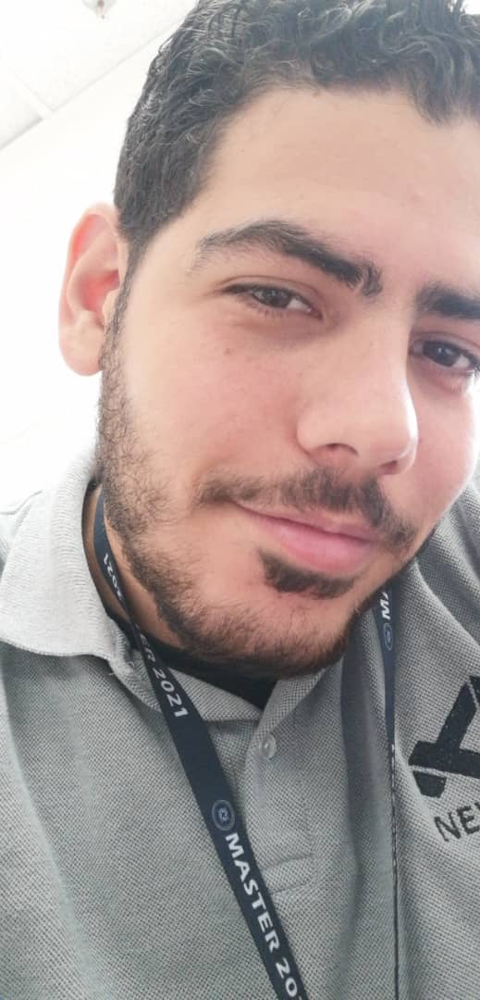

|  |
Victor Daniel Tafuri VidalEstudiante de 6to Semestre en la Escuela de Computacion de la UCV, Supervisor Departamento de NEXGO de DISGLOBAL, Auxiliar Docente del Laboratorio de Postgrado en la Facultad de Ciencias de la UCV Segunda Linea del Equipo de Rugby UCVRFC Mi Color Favorito es: Azul Mi Libro Favorito es: Tormenta de Espadas Estilo de musica preferida es: Cualquiera Mis Video juegos Favoritos son: the last of us Lenguajes Aprendidios: c++,java Si necesitan comunicarse conmigo me pueden escribir a: victortafuri2@gmail.com |